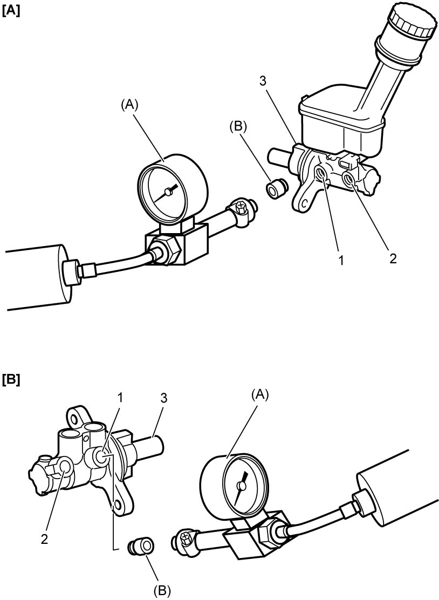
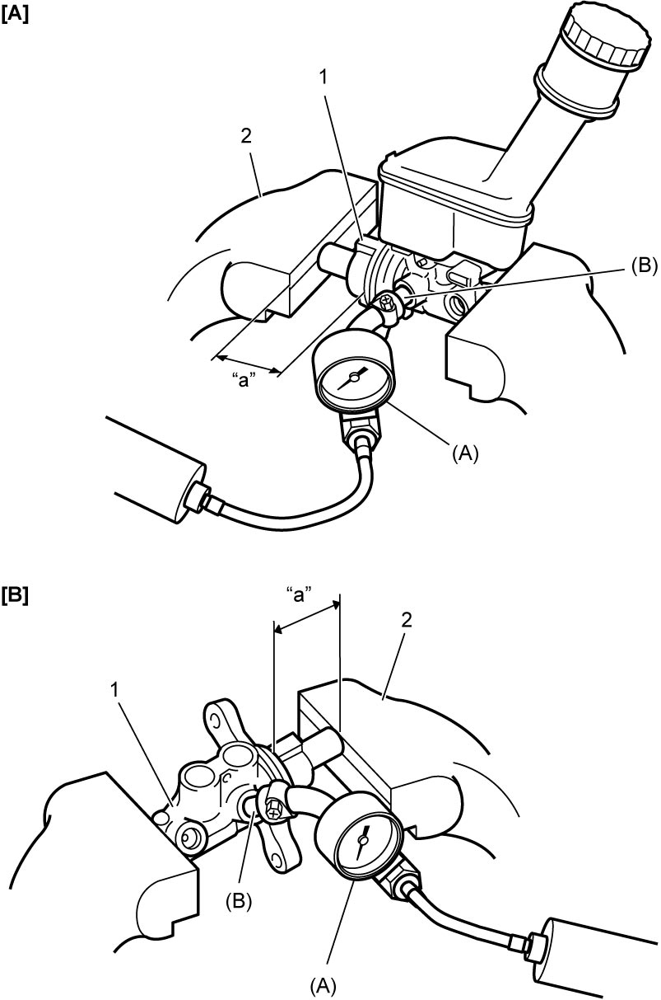

4A
| Brake Master Cylinder Assembly Inspection |
No-Load Inspection
1)For RHD model, remove brake master cylinder reservoir. 
2)Fit special tool to primary port (1) as shown below.


 "Expand image")
| [A]: | LHD | 2. | Secondary port |
| [B]: | RHD | 3. | Brake master cylinder assembly |
3)Apply pressure to brake master cylinder assembly with special tool (A) and check that pressure does not build up in cylinder.
If pressure builds up, brake master cylinder assembly is defective and must be replaced.
If pressure builds up, brake master cylinder assembly is defective and must be replaced.
4)Repeat Step 2) – 3) for secondary port as well.
Air Tightness Inspection
1)For RHD model, remove brake master cylinder reservoir.
2)With brake master cylinder assembly (1) fixed in vise (2) as shown below, fit special tool to primary port.
NOTE:
When using vise, put clean cloth between brake master cylinder and vise so as not to cause damage to brake master cylinder.

 "Expand image")
| [A]: | LHD | “a”: | 50 mm (2.0 in.) |
| [B]: | RHD |
3)Using special tool, apply pressure of 50 kPa (0.5 kgf/cm2, 7.25 psi, 0.5 bar) to brake master cylinder assembly.
If above pressure does not build up, brake master cylinder assembly is defective and must be replaced.
If above pressure does not build up, brake master cylinder assembly is defective and must be replaced.
4)Repeat Step 2) – 3) for secondary port.